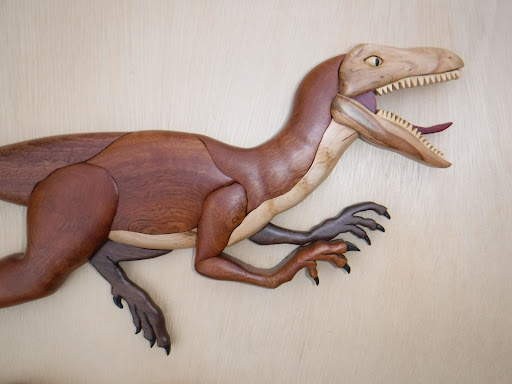
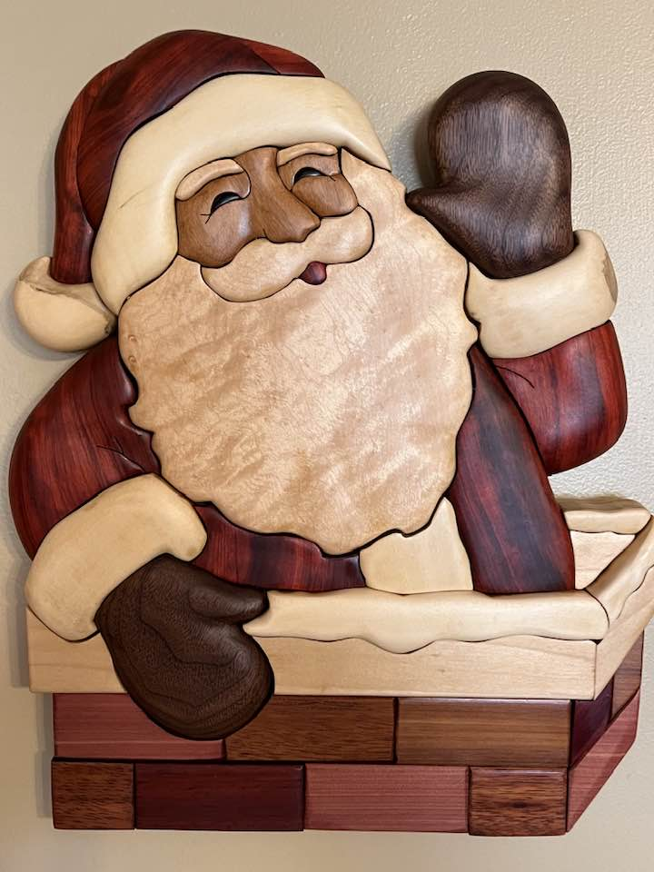
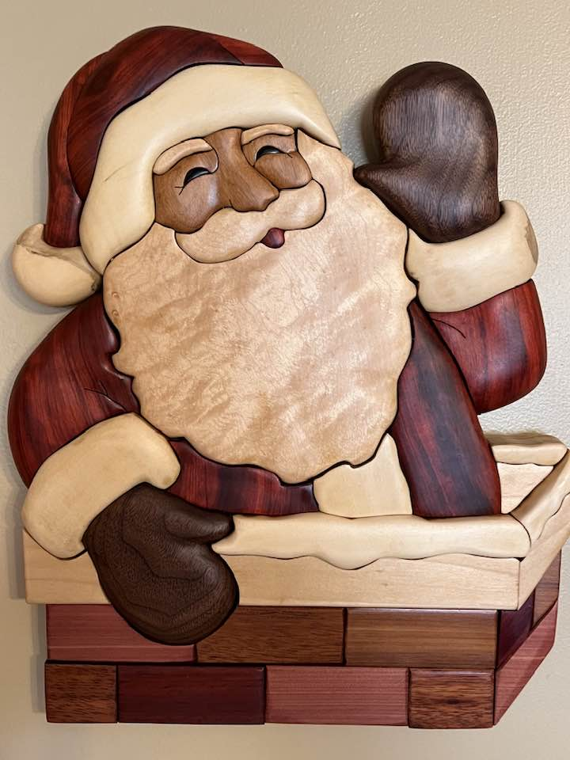

About Albert Bandy
My name is Albert Bandy, and I'd like to share my journey into the world of woodworking and my passion for a unique form of art called Intarsia. Woodworking has always captivated my interest, and after retiring from the workforce, I decided to turn it into a fulfilling hobby. It all began with a simple investment in a scroll saw, a versatile tool that allows me to create intricate and detailed cuts with precision. To enhance my skills and gather creative inspiration, I delved into the world of online resources, particularly YouTube videos, which provided me with valuable ideas and step-by-step instructions on harnessing the potential of my new saw.
My initial projects, once completed, resembled 2-dimensional artworks, often resembling wall plaques or intricate wooden puzzles crafted from 1/4 inch thick wood stock. However, my curiosity and dedication led me to explore various facets of woodcraft, ultimately leading me to the captivating world of Intarsia.
What is Intarsia?
In essence, it is a form of woodworking art that involves creating a mosaic of contrasting and complementary woods, skillfully cut, sanded, and meticulously glued onto a wooden support. The result is a mesmerizing 3-dimensional masterpiece. This unique craft was immensely popular during the 15th century in Italy, and it has retained its allure through the centuries.
The magic of Intarsia lies in the use of diverse species of wood, each with its distinct grains, colors, and thicknesses. When combined, these elements transform into a mesmerizing 3-dimensional work of art. The creative process typically commences with the careful cutting of a pattern into smaller, manageable shapes. These pieces are then skillfully attached to the wood and serve as a guide for precision cutting. Once all the pieces are expertly cut, they undergo meticulous sanding and shaping to seamlessly fit the pattern. Finally, they are delicately glued onto a wooden backing.
What distinguishes Intarsia from other woodworking techniques is the exclusive use of natural wood colors. In most cases, stains are avoided because of the vast array of colors that can be harnessed from the natural wood itself. However, there are exceptions to this rule, allowing for unique and personalized touches to be added to certain projects.
One of my most cherished Intarsia projects was a "T" Rex dinosaur, for which I used a pattern purchased from Judy Gale Roberts Studios. Since then, I've been consistently working on new creations while also exploring my own designs. It's a labor of love that not only allows me to express my creativity but also connects me with the rich history and tradition of Intarsia woodworking.
Thank you for joining me on this woodworking journey, and I look forward to sharing more of my Intarsia creations with you in the future.



 
